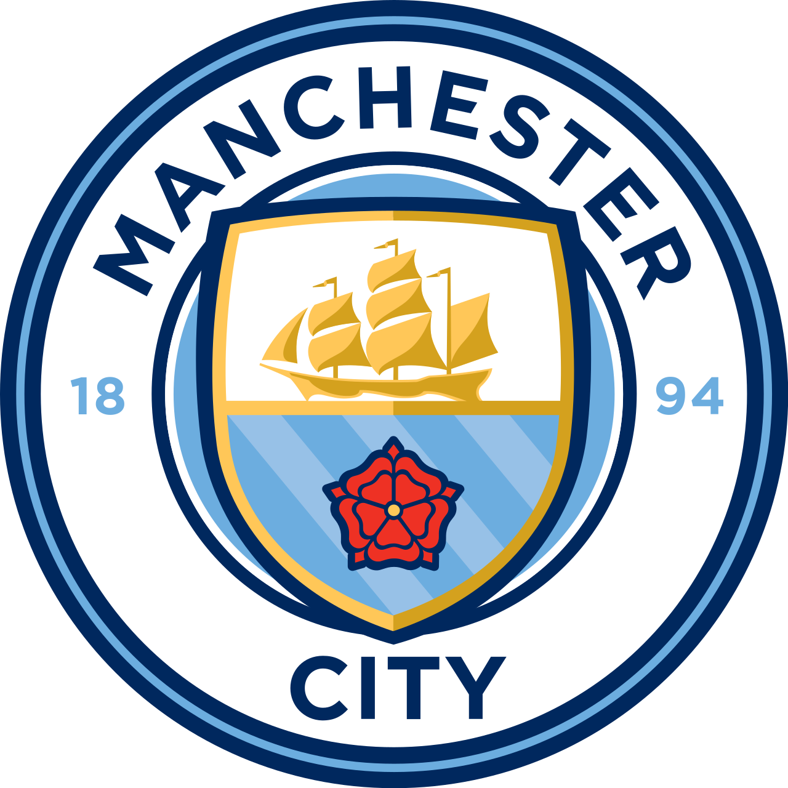

Bodo/Glimt
- 3
- -
- 1
25 de Octubre, 2024 · 20:00
Aspmyra Stadion
Man City

Eventos
- 22' Gol K.Høgh
- 24' Gol K.Høgh
- 58' J.P. Hauge
- 61' Amarilla Rodri
- 62' Roja Rodri
- 90'+3 Amarilla R. Cherki
Alineacion Titular Bodo/Glimt
- Nikita Haikin
- Fredrik André Bjørkan
- Jostein Gundersen
- Odin Luras Bjørtuft
- Fredrik Sjøvold
- Jens Petter Hauge
- Sondre Fet
- Patrick Berg
- Håkon Evjen
- Kasper Høgh
- Ole Didrik Blomberg
Alineacion Titular Man City
- Gianluigi Donnarumma
- Nico O'Reilly
- Max Alleyne
- Abdukodir Khusanov
- Rayan Aït-Nouri
- Tijjani Reijnders
- Rodri
- Rico Lewis
- Phil Foden
- Erling Haaland
- Rayan Cherki